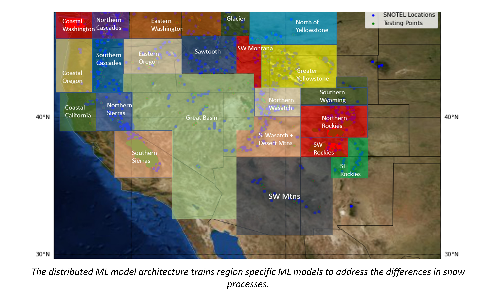
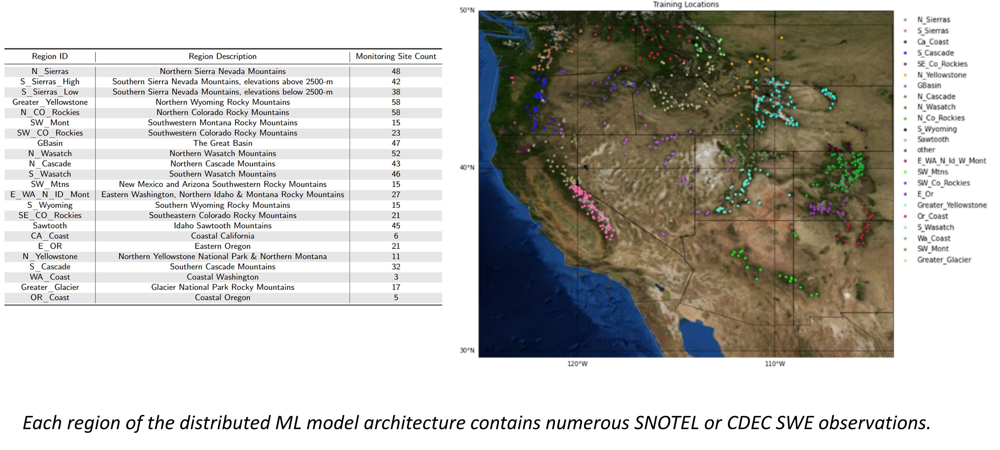

Modeling Approach
Contents

Modeling Approach#
High-level overview of data-processing
Model Training
Preliminary Model Evaluation (iterate with model training)
Hindcast
Hindcast Evaluation (iterate through previous steps)
Machine Learning Approach#
Snow falls different accross the western US, and thus, was decided upon to develop a distributed ML SWE estimation model addressing the unique hydrometeorological variability observed in the modeling doamain. For example, the western U.S. contains snow climate classifications of coastal, coastal transitional, intermountain, and continental. The modeling framework addresses the heterogeneity in snow processes through the the division of the study area into 23 regional locations. Dividing the model into sub-regions allows for the separation of microclimates to reduce the influence of individual region dynamics on differing regions during model training.
{kind=link}
Data#
Machine learning models “learn” the relationships between independent and dependent variables through large amounts of data. Data sourced for the model consisted of geographic and topographic information from the Copernicus Digital Elevation Model (90-m DEM) and ground measurement data from the NRCS Snow Telemetry and Snow Course program (i.e., SNOTEL), as well as from the California Department of Water Resources California Data Exchange Center (CDEC). In total, geographic and weekly SWE observational data from 594 SNOTEL sites and 106 CDEC sites from 2013-2019 are collated. Weekly observations of the most recent date available at the same locations support near-real-time model inference.
{kind=link}
Machine Learning Models#
There are many different types of machine learning models for differnt applications, such as classification, regression, and clustering. For the application of predicting 1-km gridded SWE, a regression model is the best approach. While there are many regression-based machine learning algorithms, we use Light Gradient Boosted Models (LightGBM) and Multi-Layered Perceptron networks (MLP). Below is a brief description of each machine learning modeling methodlogy.
LightGBM#
Gradient boosted decision trees (GBDT) are a machine learning algorithm exhibiting impressive performance across various classification and regression applications. The algorithm generates a solution based on an ensemble of learning models, where weak learner trees, trained on the residuals of an initial strong learner, are iteratively added to the model to minimize the overall loss function (negative root-mean-squared-error) of the model via gradient descent of the individual weak learners.
The LightGBM framework is an evolution of GBDT, and introduces Gradient-based One-Side Sampling (GOSS) to the boosting algorithm. GOSS focuses the model learning on trees with larger gradients and randomly drops learners with small gradients to provide a more efficient and more accurate gain estimation than with traditional gradient boosting.
MLP#
The MLP is a classical type of feedforward ANN, being successfully and frequently applied in environmental modeling applications. The MLP regression model estimates a target variable by learning a non-linear function to describe the target from an input vector of features. It performs learning via a back-propagation algorithm over a series of hidden layers containing interconnected nodes (neurons). The neurons connect bordering layers by a summation of weights and an activation function transforms model outputs to predicted values. The model calculates error and adjusts the weights to minimize the error during model training, supporting the use of MLPs to effectively describe a target variable with any function, continuous or discontinuous.